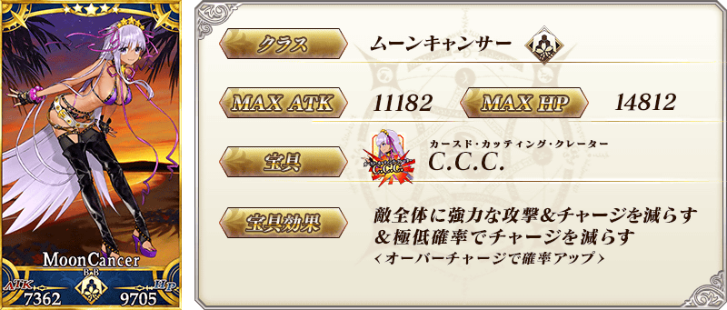
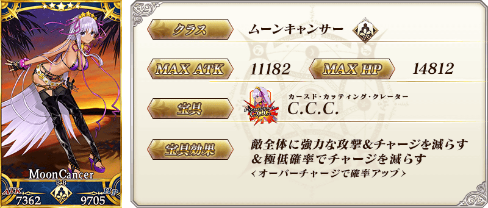
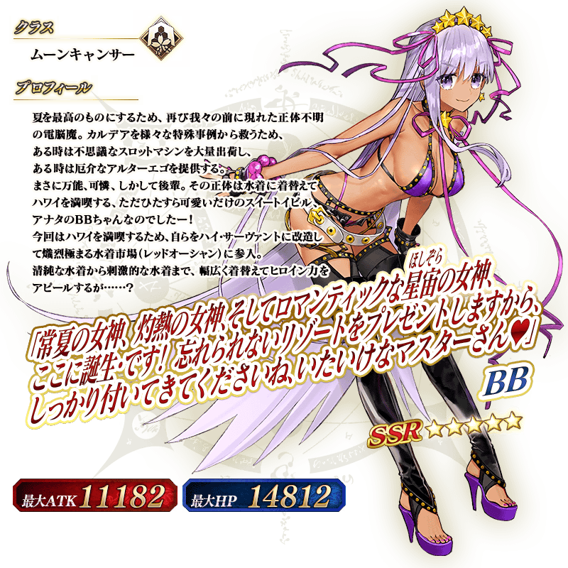
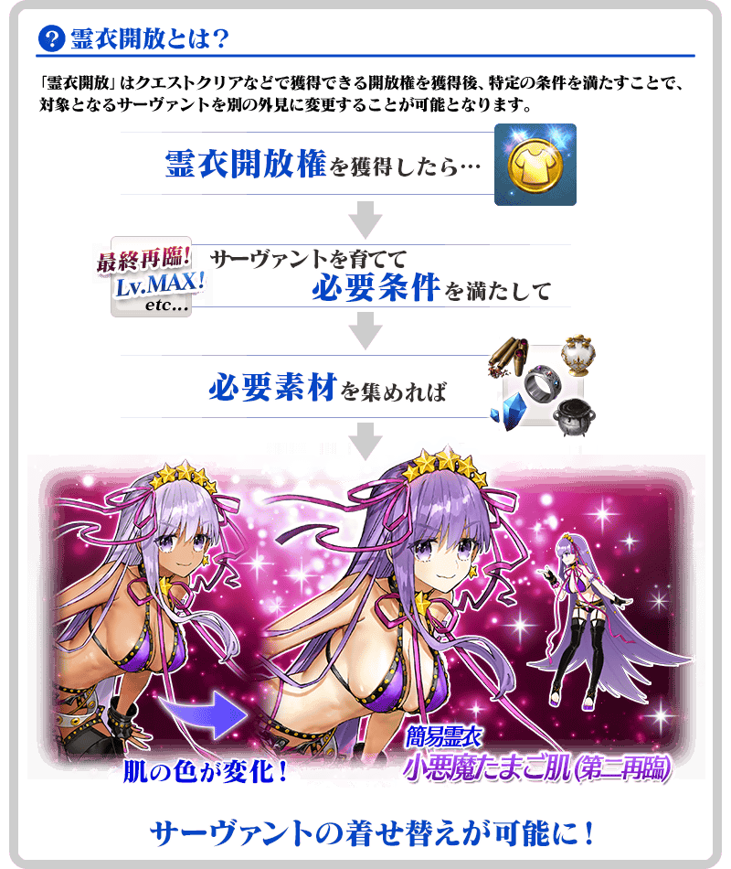
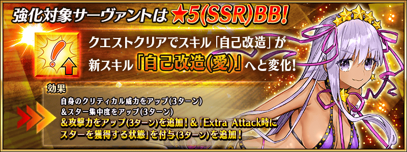
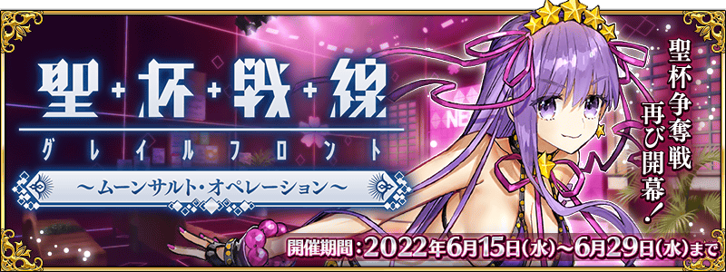

◆「聖杯戰線 ～月球空翻・行動～Pick Up2召喚」期間◆
期間:2022年6月19日(日) 17:00～6月29日(三) 11:59
期間限定活動「聖杯戰線 ～月球空翻・行動～」に関連する從者的中から期間限定從者「★5(SSR)BB」Pick Up！ ※就算未滿足活動參加條件的狀態也能進行本召喚。
▼期間限定從者
・★5(SSR)BB
Pick Up期間中，Pick Up對象從者的出現機率提升！
詳情請在聖晶石召喚畫面左下的召喚詳細確認。
11次召喚中確定1張★4(SR)以上和確定1位★3(R)以上的從者！ ※確定★4(SR)以上包含從者和概念禮裝。
【重要】
◆關於「確定召喚」功能◆
・期間限定Pick Up召喚中，在329次以內未召喚到Pick Up對象★5(SSR)從者情況，只限1次可在進行第330次的召喚時「確定召喚」必定1位Pick Up對象★5(SSR)從者。
・在同時間舉辦多個期間限定Pick Up召喚的情況，各召喚分別(每個召喚畫面頁面)計算召喚次數。另外，以每日交替Pick Up召喚的內容切換情況，各自分別計算召喚次數。舉例，每天23:00時間點變更召喚內容的Pick Up召喚情況，請注意在召喚內容變更的時間點會重置召喚次數的計算。
・請注意期間限定Pick Up召喚中滿足以下任何條件的話，在召喚畫面會顯示「Pick Up對象確定召喚已結束。(ピックアップ対象の確定召喚は終了しました。)」，該召喚中「確定召喚」功能變成無效。
・第329次前召喚到Pick Up對象★5(SSR)從者
・在第330次確定召喚到Pick Up對象★5(SSR)從者
・召喚次數在期間限定Pick Up召喚中用有償聖晶石、無償聖晶石、呼符進行召喚時都會計算。目前的召喚履歴可於該召喚畫面內確認。
※每10次召喚進行的「＋1次獎勵召喚」與用有償聖晶石進行的1天1次限定「1次召喚」也在計算的對象。
※每個召喚內容會分開計算「＋1次獎勵召喚」與1日1次限定的「1次召喚」。請注意在變更召喚內容那天的23:00，「＋1次獎勵召喚」和「1次召喚」的計算會被重置。
※透過有償聖晶石1個「1次召喚」的計算，也會在每天3:00重置。
・在進行11次召喚時滿足「確定召喚」功能條件的情況，在施行11次召喚中會確定召喚1位Pick Up對象★5(SSR)從者。屆時，11次召喚中保障的確定1張★4(SR)以上與確定1位★3(R)以上的從者會另外生效。
・期間限定Pick Up召喚結束後，無法繼承召喚次數到別的召喚。
・故事召喚、友情點數召喚為「確定召喚」功能的對象外。
◆關於1天1次限定的有償聖晶石召喚◆
※可以1天1次限定於期間限定召喚用有償聖晶石1個進行「1回召喚」。
※透過有償聖晶石1個的「1次召喚」，每天3:00重置。
※透過有償聖晶石1個的「1次召喚」對應的聖晶石召喚有好幾個的情況，各個召喚中1天各進行1次有償聖晶石1個的「1次召喚」。
※請注意就算進行透過有償聖晶石1個的「1次召喚」，不包含在1次獎勵的計算。
※聖晶石購入時賦予的「附贈(オマケ)」是做為無償聖晶石而不包含在有償聖晶石的個數，請注意別搞錯。另外，持有聖晶石的細項，可從持有道具一覧確認。
◆關於透過召喚獲得從者硬幣◆
在期間限定召喚、故事召喚、友情點數召喚中入手從者時，可獲得該從者的從者硬幣。
◆有關從者的注意◆
※下述的從者在Pick Up期間結束後不會追加到故事召喚。
・★5(SSR)BB
 
※上述「★5(SSR)BB」的卡面為靈基再臨第1階段。

※上述「★5(SSR)BB」的卡面為靈基再臨第1階段。
 ※上述「★5(SSR)BB」的立繪為靈基再臨第1階段。
介紹在2022年6月18日(六)翻新的「★5(SSR)BB」寶具演出！
※「★5(SSR)BB」的寶具演出，透過翻新變得會根據靈基再臨階段和穿著靈衣來變化。
在2018年舉辦的期間限定活動「從者．夏日．慶典！」及2019年舉辦的「復刻:從者．夏日．慶典！ 輕量版」中登場的「★5(SSR)BB」的簡易靈衣「小惡魔柔嫩肌膚(第二再臨)」與「小惡魔柔嫩肌膚(第三再臨)」的開放權，在達文西工房的「靈衣縫製」追加！
用稀有稜鏡2個交換後，可入手上述靈衣開放權。
並且，有通過「深海電腦樂土 SE.RA.PH」「復刻版:深海電腦樂土 SE.RA.PH -Second Ballet-」「Main Interlude 深海電腦樂土 SE.RA.PH」任一的「終幕」的情況即可免費交換簡易靈衣「小惡魔柔嫩肌膚(第二再臨)」與「小惡魔柔嫩肌膚(第三再臨)」的開放權！
另外，想靈衣開放的話，除了靈衣開放權外再加上必須滿足一些開放條件。
◆交換條件◆
滿足以下條件的御主才能交換
【小惡魔柔嫩肌膚(第二再臨)】 ・通過「特異點F 炎上汙染都市 冬木」 ・未入手簡易靈衣「小惡魔柔嫩肌膚(第二再臨)」開放權
【小惡魔柔嫩肌膚(第三再臨)】 ・通過「特異點F 炎上汙染都市 冬木」 ・未入手簡易靈衣「小惡魔柔嫩肌膚(第三再臨)」開放權
※追加到「靈衣縫製」的簡易靈衣「小惡魔柔嫩肌膚(第二再臨)」開放權、簡易靈衣「小惡魔柔嫩肌膚(第三再臨)」開放權為永久，沒有交換期限。 ※關於已經取得交換對象靈衣開放權的玩家，無法交換。 ※在用稀有稜鏡2個交換簡易靈衣「小惡魔柔嫩肌膚(第二再臨)」開放權或簡易靈衣「小惡魔柔嫩肌膚(第三再臨)」開放權後達成免費化條件的情況，會返還交換使用的稀有稜鏡2個到禮物箱。
◆靈衣開放權交換免費化的條件◆
滿足以下任一條件的御主才能免費交換
・通過「深海電腦樂土 SE.RA.PH」的「終幕」
・通過「復刻版:深海電腦樂土 SE.RA.PH -Second Ballet-」的「終幕」
・通過「Main Interlude 深海電腦樂土 SE.RA.PH」的「終幕」
◆有關靈衣開放權的注意◆
※「★5(SSR)BB」的靈衣是只變化外觀，語音不會變化的「簡易靈衣」。
※請注意未持有「★5(SSR)BB」的情況，可入手靈衣開放權。但無法進行靈衣開放。
◆追加道具(永久)◆
| 追加道具 | 能交換次數 | 1次交換所需的 稀有稜鏡數 |
|---|---|---|
| 簡易靈衣「小惡魔柔嫩肌膚(第二再臨)」開放權 | 1次 |
2個 有通過「深海電腦樂土 SE.RA.PH」「復刻版:深海電腦樂土 SE.RA.PH -Second Ballet-」「Main Interlude 深海電腦樂土 SE.RA.PH」任一「終幕」的情況就能免費交換！ |
| 簡易靈衣「小惡魔柔嫩肌膚(第三再臨)」開放權 | 1次 |
2個 有通過「深海電腦樂土 SE.RA.PH」「復刻版:深海電腦樂土 SE.RA.PH -Second Ballet-」「Main Interlude 深海電腦樂土 SE.RA.PH」任一「終幕」的情況就能免費交換！ |


「靈衣開放」是自強化畫面進行。
※「靈衣開放」後會自動切換戰鬥角色和外觀圖片。若想回到「靈衣開放」前的狀態和變成其他再臨階段的情況，可自從者詳細畫面變更。 ※進行「靈衣開放」不會讓職階和能力等有所變化。
介紹★5(SSR)BB的簡易靈衣開放後寶具演出！
介紹開放簡易靈衣「小惡魔柔嫩肌膚(第二再臨)」的「★5(SSR)BB」的寶具演出！
強化「★5(SSR)BB」的特別關卡「從者強化關卡」，在迦勒底之門永久追加。
不僅進行對象從者的強化，也可獲得聖晶石做為關卡通過報酬。
※請注意在從者強化關卡沒有文字冒險部份。
◆追加時間◆
2022年6月19日(日) 17:00～
◆開放條件◆
持有的強化對象從者，必須使其最終再臨。
※未持有對象從者的話，不會出現關卡。
※關卡沒有舉辦期限。

其他還有，
・聖杯戰線 ～月球空翻・行動～
・聖杯戰線 ～月球空翻・行動～Pick Up召喚
以期間限定舉辦中！
關於詳情，請自下述橫幅確認。
■「聖杯戰線 ～月球空翻・行動～」詳細情報 
■「聖杯戰線 ～月球空翻・行動～Pick Up召喚」詳細情報